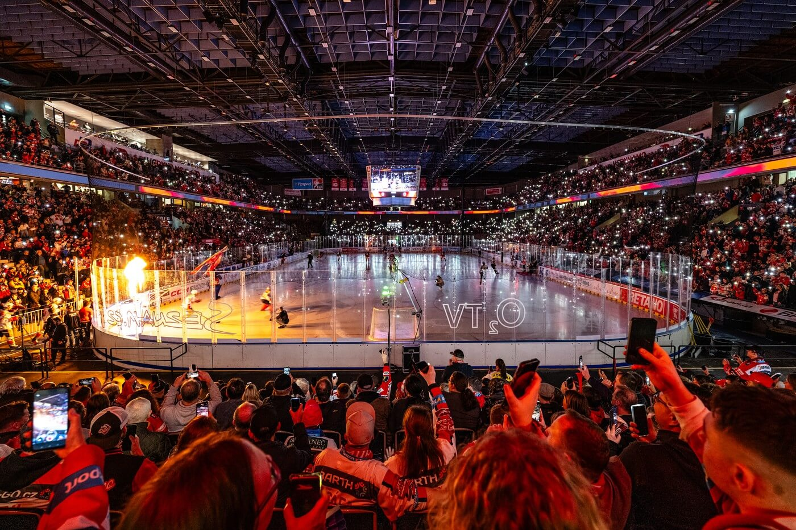

Lední hokej – vášeň, rychlost a tým
Lední hokej je jedním z nejpopulárnějších sportů na světě, obzvláště v České republice. Jde o rychlou a dynamickou hru plnou emocí.
Proč je hokej tak úžasný sport?
Hokej kombinuje bruslařské umění, fyzickou sílu, rychlé myšlení a týmovou spolupráci. Každý zápas přináší nečekané zvraty.
Základní hokejová výstroj hráče:
- Brusle a hokejka
- Helma a obličejová mřížka/plexi
- Ramenní chrániče, nákrčník a vesty
- Chrániče kolen a loktů
- Hokejové kalhoty a rukavice
Užitečné odkazy o hokeji
Pokud tě zajímají aktuální výsledky a dění v českém hokeji, navštiv tyto stránky:
- Hokej.cz – Oficiální portál českého hokeje
Hokejová atmosféra
Zaplněná hala a napínavý zápas na ledové ploše:

Jak začít s hokejem:
- Naučit se bezpečně bruslit na ledě
- Pořídit si základní hokejovou výstroj
- Připojit se k mládežnickému nebo hobby týmu
- Trénovat techniku střelby a přihrávek